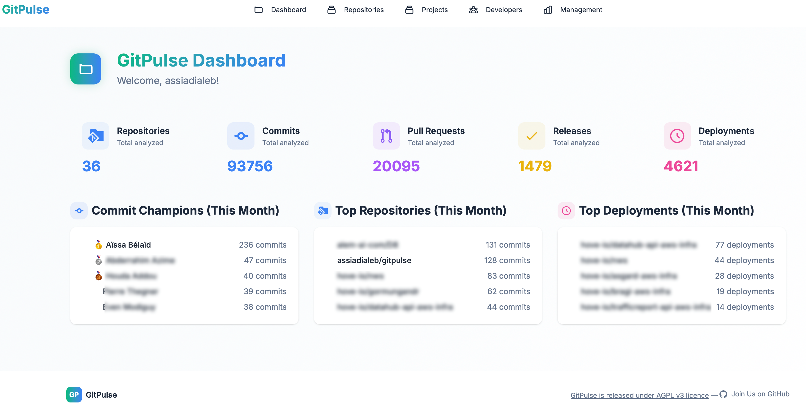

GitPulse - GitHub Analytics Dashboard
GitHub Analytics Dashboard for CTOs, Tech Leads, and Curious Developers


🧭 What is GitPulse?
GitPulse is an open-source dashboard designed to analyze developer activity and contribution trends within a GitHub organization.
I started building it as a CTO because I couldn't find a tool that was simple and reliable enough to track the activity of my teams and products. GitPulse is a personal project, developed during my free time. It will evolve based on my availability and interests. Most GitHub/Git analytics tools focus on repository-level data. GitPulse lets you group multiple repositories into a single logical project — reflecting how real software is built and delivered. Perfect for tracking large apps, microservices, or monorepo-like architectures.
I'm currently building GitPulse solo, with no QA team. If you encounter bugs or unexpected behavior, contributions are welcome—as long as they stay aligned with the spirit of the project: useful, readable, and not overengineered.
{kind=link}

✨ Key Features
🧩 Project-Level Aggregation: Group multiple repositories into a single product or initiative to track contributions, trends, and metrics across an entire software unit — not just per repo.
📊 Comprehensive Analytics: Track commits, pull requests, reviews, merges, and contributor activity.
👥 Developer Insights: Understand individual and team-level behaviors over time.
📈 Trend Analysis: Spot slowdowns, bottlenecks, or productivity shifts through contribution trends.
🔍 Repository Analytics: Dive into activity metrics and code quality signals per repository.
🛡️ Security Health Score: Advanced security metrics with CodeQL integration and vulnerability analysis.
⚡ Live GitHub Sync: Realtime updates powered by the GitHub API, no manual refresh.
🎯 Integrations: Many integrations OSS Index, Github, CycloneDX and more to come (sonarqube, Snyk...)
🏗️ Architecture (briefly)
GitPulse uses a modern but focused tech stack:
- Backend: Django 5.2+ (Python 3.12)
- Databases: MongoDB (analytics data) + PostgreSQL (user data)
- Task Queue: Django-Q
- UI: Responsive frontend with DaisyUI
- Deployment: Docker-ready with clean documentation
🚀 Quick Start
Option 1: Docker
⚠️ GitPulse is still in early development. The code and Docker setup are subject to change. If you’re looking for a stable deployment method, please wait for the first official release.
git clone https://github.com/assiadialeb/gitpulse.git
cd GitPulse
cp env.example .env
docker-compose up -d --build
Option 2: Local Installation
Requirements
- Python >= 3.12
- PostgreSQL
- MongoDB
- Ollama
- NPM
git clone https://github.com/assiadialeb/gitpulse.git
cd GitPulse
python -m venv venv
source venv/bin/activate # On Windows: venv\Scripts\activate
pip install -r requirements.txt
npm install
cp env.example .env
python manage.py migrate
python manage.py runserver
ℹ️ Note: Don’t forget to review and adapt the .env file to match your local environment (e.g., database settings, GitHub token, debug mode, etc.).
🤝 Contributing
We welcome contributions! Please see our Contributing Guide for details.
Development Setup
git clone https://github.com/assiadialeb/gitpulse.git
cd GitPulse
python -m venv venv
source venv/bin/activate
pip install -r requirements.txt
cp env.example .env
python manage.py migrate
python manage.py runserver
📄 License
This project is licensed under the AGPL v3 License - see the LICENSE file for details.
🙏 Acknowledgments
- Crafted in Python
- Built with Django
- UI powered by DaisyUI
- Documentation with MkDocs Material
- SBOM generation with @cyclonedx/cdxgen
- And yes, way too much JavaScript 😅
- Backends provided by Postgresql and MongoDB
- AI feature provided by Ollama
- Plus countless other amazing Open Source libraries that make this project possible 💜
Crafted with ❤️ (and way too many late nights) for the tech managers community
GitHub • Issues • Discussions